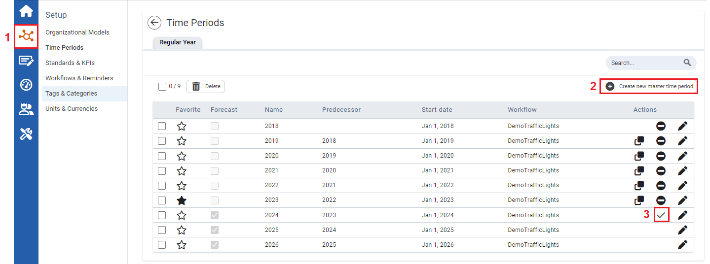
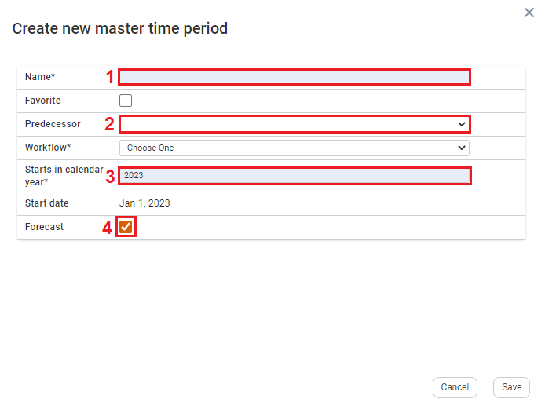

To see future forecasts, forecast time periods must be created in the Time Periods module.
This time period is solely used for forecasts. The forecast time period has no configurated Organizational Models and KPIs.
Prior to creating forecast time periods, users need to ensure the following is completed:

| 1 | On the left navigation panel, click Setup, and then click Time Periods. The Time Periods window appears. |
| 2 | To create new forecast time periods, click Create new master time period. The Create new time period window appears. |
| 3 | To convert an existing forecasting time period to a reporting time period, ensure the Action column for that time period is changed to a checkmark. |

| 1 | On the Create new time period window, fill in the Name textbox. |
| 2 | Click the Predecessor dropdown textbox, and select a predecessor. |
| 3 | Click the Year* scroll textbox, and select a year. |
| 4 | Click the Forecast checkbox, to activate the forecast time period. |
| 5 | Click Save. You will then be redirected back to time period main page, with the new forecast time period added to the existing table. |
Once the Date forecast Tool has been enabled (see Enabling the Data Forecast Tool), the forecasting time periods need to be set up. Then adjustments can be made to the Data Forecast Settings (see Adjusting Data Forecast Settings), and then Data Forecast can be viewed in the form of chart (see Viewing Data Forecast in a Chart).